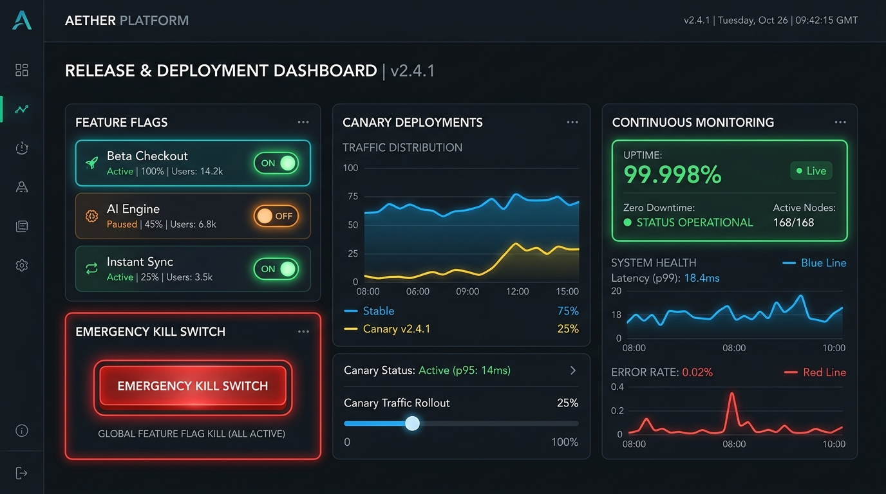

Deploy Sem Risco & Alta Disponibilidade:
Liberações graduais com Feature Flags e zero downtime
Na Hydra One, colocar um sistema no ar não é um evento estressante de madrugada. Aplicamos práticas de engenharia de elite mundial: Canary Deployments, Feature Flags com Kill Switch instantâneo e observabilidade em tempo real para garantir que seus usuários nunca vejam uma tela fora do ar.

Como blindamos a operação do seu negócio
O verdadeiro profissionalismo de uma empresa de software se revela na estabilidade de produção. Conheça as tecnologias que mantêm sua plataforma segura, rápida e imune a surpresas.
1. Liberações Graduais (Canary & Blue-Green)
Em vez de atualizar 100% dos usuários de uma só vez, direcionamos primeiro 5% do tráfego para a nova versão. Nossos robôs analisam telemetria e erros. Estando tudo perfeito, ampliamos para 25%, 50% e 100% de forma totalmente imperceptível.
- Zero downtime: o cliente nunca vê mensagem de "estamos em manutenção"
- Detecção automática de anomalias com aborto automático de deploy
- Ambientes espelhados (Blue/Green) para transição instantânea
2. Feature Flags & Dark Launching
Separamos o ato de implantar código do ato de liberar funcionalidades para o usuário. Novas ferramentas podem ser ativadas gradualmente para clientes VIPs ou grupos de teste através de interruptores no painel de controle.
- Kill Switch: Desative qualquer funcionalidade instável em 1 segundo
- Testes A/B nativos e validação de conversão antes da adoção em massa
- Sem necessidade de rebuild ou deploy emergencial para reverter algo
3. Observabilidade, Suporte & DevSecOps
Monitoramos continuamente latência de consultas ao banco, consumo de memória, taxas de erro e tentativas de invasão. Nossos engenheiros recebem alertas antes mesmo do seu cliente perceber qualquer instabilidade.
- Tracing distribuído de ponta a ponta (tempo de resposta por endpoint)
- Criptografia de dados em repouso e em trânsito (SSL/TLS estrito)
- Backups automatizados diários com teste de restauração validado
Deploy Amador vs. Engenharia de Produção Hydra One
Entenda o impacto financeiro e reputacional de ter um deploy com controle absoluto versus a roleta russa tradicional.
Deploy Amador & Tradicional
- Deploys feitos de madrugada por medo do sistema cair em horário comercial.
- Qualquer erro derruba a plataforma inteira para todos os clientes ao mesmo tempo.
- Para reverter um bug crítico, é necessário horas de compilação e novo deploy sob pânico.
- A equipe só descobre que o sistema quebrou quando os clientes reclamam no suporte.
Engenharia de Produção Hydra One
- Deploys diários a qualquer hora do dia com total tranquilidade e zero downtime.
- Canary releases limitam qualquer impacto a um número mínimo de usuários controlados.
- Feature Flags desligam instantaneamente recursos problemáticos sem novo deploy.
- Observabilidade automatizada antecipa e alerta falhas antes de qualquer impacto.